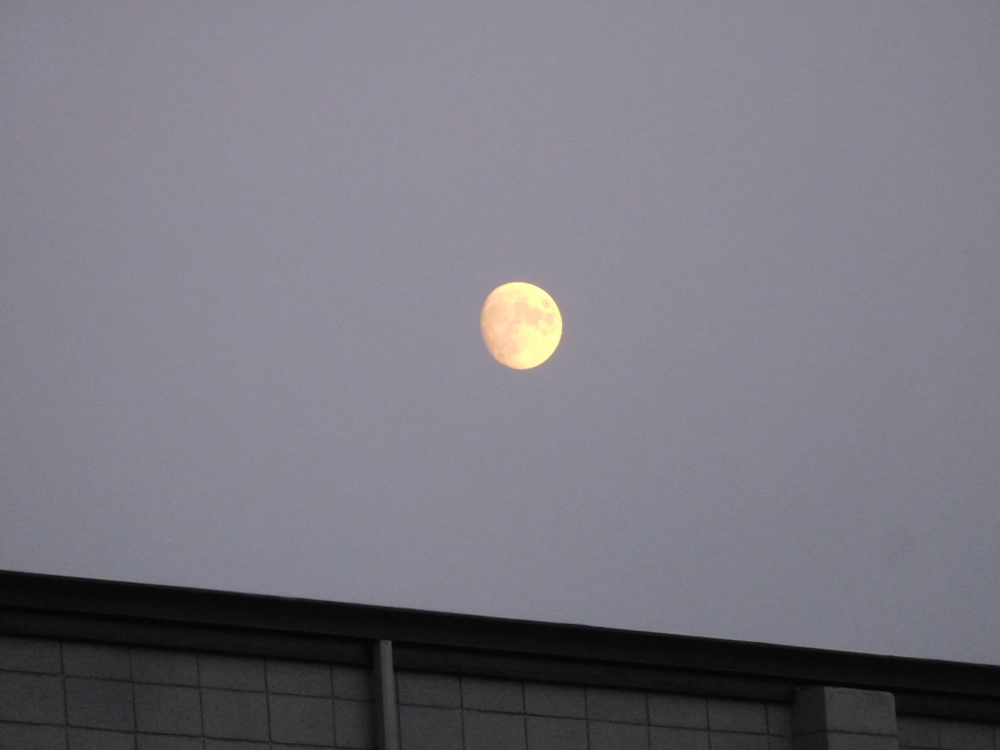

|
|
About me:
Born in Los Angeles, lived most of my life in the Idaho countryside
B.A. with Linguistics Emphasis, Boise State, May 2021
Areas of research: Finno-Ugric Linguistics (Estonian, Finnish, Karelian, Veps), Typology, Language Technology and Corpora/Corpus Linguistics, Digital Lexicography, Morphology & Syntax
Certificate in Estonian, Tartu University, 2009
Graduate studies at Tartu University pending admission in 2022
Employment:
Learning Assistant for LING 305-Introduction to Language Studies, Boise State, 2019-2021
I am a science communicator devoted to several fields of Linguistics, so I can see myself as a professor (here at BSU would be cool!). A few courses I could envision: Language Database Design and Linguistic Data Analysis, Digital Lexicography, surveys of Estonian, Finnish, Hungarian, and related languages.

Võrts Lake Viewing Tower, Estonia |
Contact info |
This division will contain links to assigments and other sites of interest.
As you may have noticed, I have two primary hobbies: linguistics and travel. To me they go together. I would like to commit to a theme for this site, either travel or language study/presentations. I welcome your suggestions.
I plan to use the skills that I learn in this course to my advantage as a web publications editor and translator (another common title is Content Specialist). If you have a background in web design and language study, check out the career opportunities.
Outside of class web design projects, I am working on my personal business page and my brother's Ida-Print 3-d printing services. I recently developed a website for a local Finnish-American historian, who specializes in historic barns and cabins.
| Media | Tags | Nested |
Places I've lived
Universities where I've studied.
I lived in the following places in this order...
I am once again residing in Idaho.
My university is BSU- Boise State University
I have also studied at
What is Estonia like? See the following links..
I also have many photos from my life in Estonia. Take a look....

|

|

Listen to this sound file to hear how to say 'welcome' in Estonian...
Estonian proverb says,
To speak is silver, to be silent is gold.
Finnish proverb says
First you build the sauna, then the house.
I lived in Washington for a couple of years. The Columbia river is really impressive...

Now living in Idaho again, and I have been to the Owyhee mountains...

Astronomy is a favorite past-time, especially watching the moon....
Picture test here. I don't think this element is working correctly, so any suggestions are welcome.